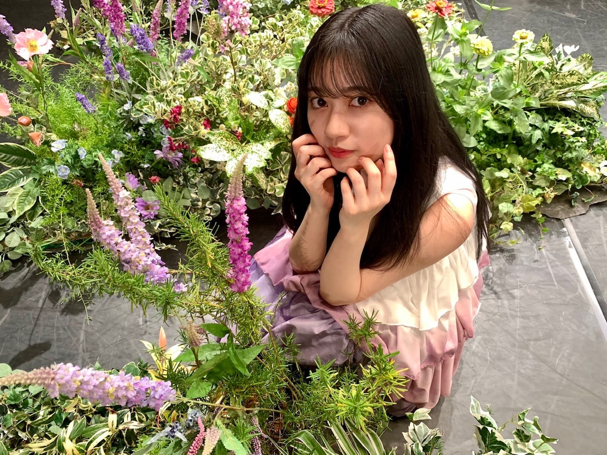
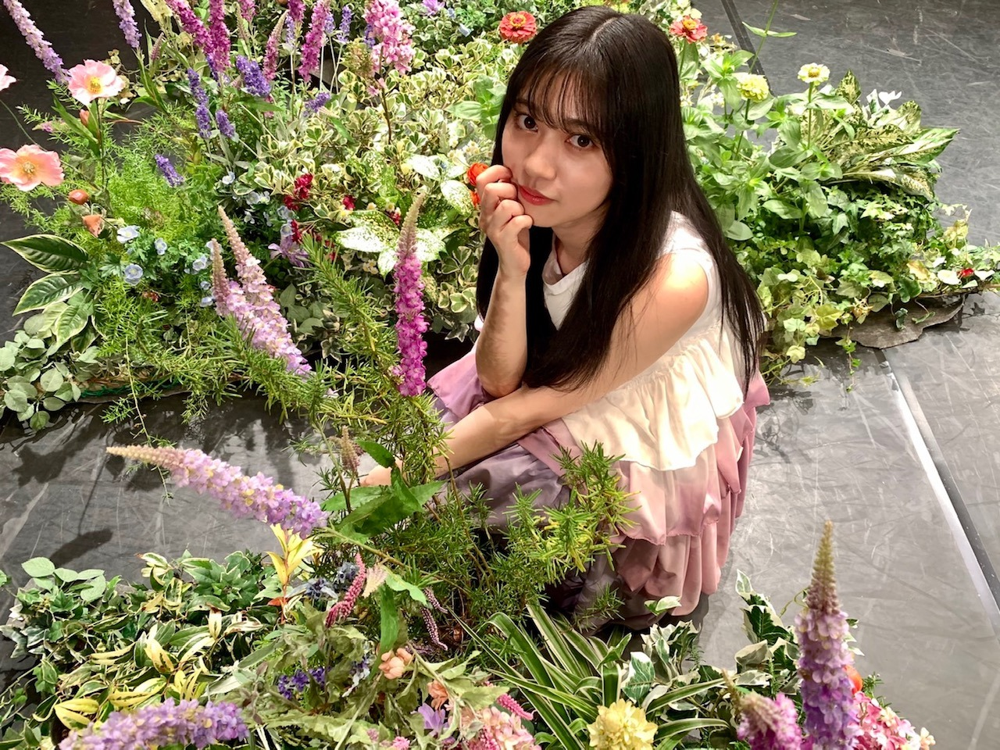

2020/0923Wedお誕生日迎えました。！
今年はまさかの出来事で
世界中、不安が広がっていて
まだまだ、先の見えない戦いではありますが
何事にも終わりはきっとあるだろうし
何回も何回も試練があって乗り越えられた人間。
だからこそ、私達の今があって生きているとより感じさせられました。
地球に生まれて地球に住まわせてもらって
日本に寺田蘭世として生まれて
乃木坂46の一員になり
沢山の人と出逢える事をより嬉しく思える年だと思っています。
いつもはツアーとかでバタバタしてて
中学生から乃木坂46として活動しているので
学生時代は活動しながらの夏休みで宿題や課題も多く
その中でツアーでも覚える事は沢山
とにかく精一杯で一生懸命
暑い中毎日を生きると言うのが私の夏で神宮球場でほんのり涼しさを感じ終わると年を重ねるのがイメージなのですが
少し違う夏も人生経験のひとつだと思います。！
でも、だからこそ自分を見つめたり
周りをより見る時間が増え
改めて感謝を伝えたくなる期間になりました。！
自分の周りにはあたたかい人しか居なくて
それはおこがましい話かもしれませんが
私が私らしく己を持って生きてきたから
出逢えた人達だと誇りを持っています。
そして、皆さんの応援は活動において
本当に心の支えだったとより感じています。！
自粛が無駄にならないようにって
意識はしていましたが
目に見えることで言えば
いつの間にかさくっと料理を作れるようになったり
だいぶ、年頭のがくたびさんが私生活に生きていたり
新しい趣味を見つけたり
色んなことにチャレンジする時間があったり
小さな頃から好きだった細かな作業
ファッションだったりお裁縫だったりに
改めて時間を注いでみたり
色んな作品を観ては感化され
動けば幾らでも自分らしくなれるとより感じました。
この小さな行動が
下半期生きればいいなと。☺️✨
今はそんな気持ちでいっぱいです。
やりたい事大きいスケールのものから
小さな事まで沢山ありますが
ひとまず、大好きな分野で
乃木坂46を知って貰える様に活動したいです。☺️
今年も宜しくお願いします。
そして、末永く宜しくお願い致します。☺️✨
お誕生日は感謝の日です。
私に関わってくださった全ての方に
感謝しています。
こんな時だからこそ
やりたい事が沢山沢山あります故
お力添えも宜しくお願い致します。！！
Instagram公式で始めました。
始められた理由や写真はそちらを見て頂けると
嬉しいです。
私らしさを出せる場所が出来て嬉しいです。✨

コメント(1142)
生まれてきてくれて、乃木坂に入ってくれてありがとう
インスタの開設もありがと〜
いろんな蘭世を沢山沢山見せて下さいね
そしてお誕生日おめでとうございます！
インスタグラム開設本当に本当に嬉しいです
また楽しみが増えました☺️
これからもずっと応援してます頑張ってください！
この先の1分1秒すべてのきっかけが
今思い描く夢に味方しますように
顔晴れ✨寺田蘭世 ٩( ᐛ )و
インスタ！やったね(^^)
蘭世らしい世界観が楽しみです(^^)
蘭世さん誕生日おめでとうございます！！
22歳の蘭世さんが楽しみです！
インスタグラムの開設しましたね
蘭世さんの魅力が沢山出せるところだと思うので更新が楽しみです！
今日も1日お疲れ様です☀︎
22歳のお誕生日おめでとうございます！
今年もいろんな蘭世ちゃんを見れて，応援できて幸せでした
これからも蘭世ちゃんらしく，色んなことに興味を持って，
色んなことに挑戦していってほしいです☺️
ファンレター贈りました！
想いとか，全部詰め込みました！笑
良かったら読んでね✨
これからも蘭世ちゃんの叶えたいことで
人生が溢れてくれた良いなぁ〜
今年も蘭世ちゃんに素敵な出会いが沢山ありますように…！
素敵な1年にしてね，ずっとずっと応援してます
改めて，22歳のお誕生日おめでとう
笑顔がいっぱいの1年になりますように
こちらこそ，末長くよろしくお願いします☺️✨
では，またコメントするね
体調崩さんよう，お互い気をつけようね
いつもありがとう，本当に大すきです
22歳の1年も蘭世の勢いとまらんぜ！！
さっこ
蘭世さんの言葉のチョイス、感性、文章、服のセンス、体、顔、全てが好きです。蘭世さんみたいな、言葉の使い方をできるような女性になりたいなぁと思っています。
お誕生日おめでとうございます。蘭世さんの22歳の一年、楽しいこと嬉しいこと幸せなこと、いっぱい待っていますように心から祈っております。
乃木坂46を寺田蘭世を好きになってから毎日が楽しくなりました。
アイドルとしても当然ですが、本当に人として尊敬してます。
出会えてよかった！
本当にありがとう！
蘭世〜
改めてお誕生日おめでとう！！
確かに今年はこんな状況になってしまって直接お祝いの言葉がかけられないのがもどかしいけど、その分蘭世は改めて自分にとってとてもかけがえのない存在の人であって大好きという気持ちが増して増して増してきましたよ(*´ー`*)
うん、必ず終わりがきっと来るさ。終わったら真っ先に会いに行ってたくさん色んなお話しようね♪
Instagram 開設おめでとう⁽⁽ ◟(∗ ˊωˋ ∗)◞ ⁾⁾
まさかこの時が来るとは…夢みたいだよ。早速フォローしてきたよ
お誕生日おめでとうございます！自己を保ち続けることがどれだけしんどくて、難しいことか
蘭世さんはそれをしてることが凄いです。そこが人を惹きつける要因なのかなと思います。
蘭世さんはこれからも蘭世さんらしくいてください
これからもずっとずっとずーっと大好きです。
こちらこそ心から感謝をしたいです。
蘭世さん誕生日おめでとう
蘭世が生まれてきてくれて、乃木坂に入ってくれて、そして俺と出逢ってくれて本当にありがとうございます。
これからも蘭世さんの夢を共に見させて「歩ませて」下さい。
蘭世と出逢えたのも何かの縁だね！！ だから最後まで蘭世を見守っていくから、、、
インスタ開設おめでとう
また書くね
大好きよーーー
いつも元気を貰ってます。
このご時世でもモバメやブログで発信してくれていた蘭世さんには感謝しています。ありがとうございます！
Instagram開設嬉しいです。これからも蘭世さんの事を応援します。
そして改めて誕生日おめでとう
2020年9月23日はとても愛が溢れている一日でした
TwitterなどのSNSで去年よりも多くの蘭世の誕生日を祝う投稿があり輪がどんどんと広がっているんだなと感じました
今日はどんな一日を過ごしたのでしょうか
ケーキなどは食べれましたか
ずっと言い続けていたSNSでの活躍これから楽しみにしてますね
Instagram開設ほんとに嬉しくてすぐに自分のアカウントのストーリーに上げました
これからファッション等のインフルエンサーとして活躍していく未来が現実味を帯びてとても楽しみです
この1年も蘭世にとって素敵な一年になりますように
今年はなかなか会う機会もなくて、蘭世不足がやばいけど、
モバメやらブログやらをこまめにやってくれるの本当に助かってる！
それとInstagram開設おめでとう！マジで嬉しいよ〜！
また少しづつ蘭世の知れてない部分が知れるといいなって思ってる！
ではではまたね〜
まずはお誕生日おめでとうございます
なんだろう、
ほんとに寺田さんへの気持ちは
伝えだしたら止まらないし
本当に私の人生
こんなにも誰かのことに夢中になって
熱くなって、時には悲しくなって
寺田さんという存在を好きになったからこそ
見てこれた景色もありますし
空っぽだった私の人生に
色を塗ってくれた
私の中で寺田さんはそんな存在に
重いかもしれないけれど
この先もこんなたくさんの感情を
持たせてくれるのは寺田さんだけです
出会ってくれてありがとう
また改めて伝えさせてもらいます！
インスタ開設おめでとう
本当に心の底から嬉しい
ずっとずっと寺田さんには
発信できる場を何か一つでも多く
と思っていて
お写真が好きな寺田さんは
絶対インスタして欲しいと思ってたから
個人としてもインスタはやっていて
これから寺田さんの投稿が楽しみで仕方がありません
あなたと誕生日なのに
こんなにも幸せなプレゼントをありがとう
その分、精一杯お祝いさせて頂きました
会えなくても、離れてても
私の頭の中はあなたでいっぱいです
本当に大好きだよ
これからも末永くよろしくお願い致します
寺田さんの誕生日だからって
わたしひょろひょろくん作ったんだ！(笑)
いつか見せに行きたいな
不器用ながらにがんばったよ
楽しみにしててね！！
☺️
ゆうき(ゆっちゃん)
そして、Instagram開設おめでとうございます。ずっと何かを発信したがってた蘭世さんにとっての第一歩だと思うのでとても嬉しいです！
早速フォローと拡散しときましたー！
22歳の1年も良きものとなりますよう願ってます。
共に笑顔で過ごせる一年を！！
応援してるよー！、
すち♥️
まずは、22歳のお誕生日おめでとうございます。!!
ブログ、モバメ有り難う。!…そしてInstagram開設おめでとうございます。!!!わーいわい
目標が達成できるように、僕らも協力しますよ。
何時だって味方でいます。!
選んだ道が全て正解だと成長しないし、つまらないでしょ。?22歳も蘭世らしく、蘭世が正しいと思う道を突き進んでください。
僕も蘭世に負けないように頑張るから。!!
よかったら、インターネットでTwitter開いて「#ranzemail」で検索してみてください。
ハッピーで溢れてますよ。!!!
お誕生日おめでとうございます！
あやねちゃんが写真集決まったから
蘭世ちゃんも写真集出して欲しい！
蘭世ちゃんに早く会いたいです！
今乃木フェスで滑走路のイベントやってるの知ってますか？
改めて聞くといい曲だなぁーと思いました！
蘭世ちゃんのセンターがピッタシです！
これからも応援し続けます！
文章書くの苦手でへんかもしれませんが
蘭世ちゃんに感謝の気持ちが届いたら嬉しいです！
僕の自慢の推しである寺田蘭世さんは、ふわふわしてるけど好きなことにまっすぐで、軸はしっかり保ちつつも新しいことをたくさん取り入れて応援してる僕たちを楽しませてくれて、
僕たちに想いを共有して一緒に夢に向かって歩ませてくれる本当に推してて楽しい方です。
22歳の蘭世も楽しむことを忘れず頑張ってほしいし、もっともっと応援できればと思ってます！
Instagramフォローしました！蘭世はSNSをずっとやりたいって言ってたから嬉しいです！
たくさんいろんなことを発信してね！インフルエンサーになってね！精一杯僕たちも協力します！！
これからもよろしく！自慢の推し！！
お誕生日おめでとう！
♥大好き♥
これからも頑張ってくださいね〜
PS､高校受験応援して欲しいなぁ。
あなたと同じ時代に生まれた奇跡に
心から感謝。を。
ブログの更新ありがとうございます。
そして、Instagramの開設本当におめでとうございます！！！
あなたの強みはきっとInstagramで最大限に発揮されるものかと思います。
そして、ゆっくり咲く花のオフショット。
心の底から最大の感謝をしています。
アナスターシャと同様に
ゆっくり咲く花も僕は一生を掛けて
愛していきたいと思います。
蘭世さん本当に、本当におめでとうございます
あなたの志に惹かれています。
自分の生きる道を教えてくれた
あなたにとても感謝しています。
いつまでも笑顔でいてください。
あなたの笑顔が大好きです。
坂道のその先へ共に進みましょう。
インスタ開設ありがとう！！
SNSでもたくさんの人がお祝いしていて蘭世推しでよかったなと改めて思える素敵な1日でした。22歳ニコニコでいきましょう！！
Instagram本当に嬉しい！！最高のプレゼントです！家で一人でガッツポーズしました笑
これからも頑張ろうね！一緒に夢を追わせてください！！
たぶんこのブログへのコメントはたくさんあると思うので今日はこの辺で。
まだまだあふれるこの気持ちをまたコメントしますね！
そしてお誕生日おめでとうございます！
インスタ開設おめでとう！！！！！
蘭世さんと出会ってもう2年半ぐらい経ちます
最初に握手会行って初めて握手した時のことを鮮明に覚えてます
あそこから随分色んなことも変わって
今会えない日々が続いてるけど
蘭世さんのおかげで
今とても幸せな時間を過ごさせてもらってます
沢山の人と出逢える事をより嬉しく思える年
まさしくこれです。その幸せを噛み締めてます。一緒に応援してた人達と会える喜びを。
蘭世さんのおかげで知り合えた人達と喜びを分かち合えるのがほんとに嬉しいし、蘭世さんと幸せを分かち合えるのがとても嬉しいです
出逢ってくれてありがとうございます
これからも何卒よろしくお願いいたします！！！！！
大好きです。
ユウキ
誕生日おめでとう！
蘭世らしく楽しい22歳になる事を！
蘭世の勢いとまらんぜ！
大好きです！
これからもずっと応援してます。
ずっと大好きです。
そして、22歳の誕生日おめでとうございます！！
蘭世の己らしさが好きで、そんな蘭世が好きな人同士繋がれたのも、蘭世のお陰です。この出会いをくれた蘭世には感謝しかありません
いつもと違う年でしたが、そんな年だからこそ考えや行動が変化することも多く、人間の適応力を実感しています
個人的な話ですが、蘭世と同じ年に生まれた私、蘭世と同じ年に、同じ年齢を重ねられるので、私の中のひとつの誇りでもあります。生まれや育ちは違えど、私は蘭世と仲間だと思っているので、これからも仲良くしてください
蘭世が言った「乃木坂のセンターになりたい」をずっと信じているので、蘭世らしさでセンターを掴んでください。私はずっと応援していきます。
改めて、誕生日おめでとうございます！生まれてきてくれてありがとう
これからもずっと好きでいさせてください
素敵な一年になりますように
僕も今日が誕生日です。
家族に祝ってもらって嬉しかったです。
いつもは休日だから、今日はちょっと変な感じです。
蘭世ちゃんは違和感ありましたか？
今年はなかなか会えず残念でしたが、ブログやモバメが多くて本当に嬉しかったです。蘭世さんが意識して投稿を増やしてくれて、自分たちのために何かをしてくれているということがとても伝わりました。
ブログのコメントくらいでしか応援は伝えられてないですが、それでも自分の言葉が届いていたら嬉しいです
蘭世さんの努力がいつか乃木坂の活動でも外仕事でも生かせる日を楽しみにしていますね
こちらこそいつもブログやモバメで元気貰ってます、ありがとうございます！
Instagram！こちらもおめでとうございます！蘭世さんのファッションの良さがさらに色んな人に伝わってくれるといいですね！蘭世さんの誕生日ですけど、いいプレゼントをありがとうございます！
インフルエンサー！目指していきましょう！もちろん自分も拡散しますし応援もいいねも欠かさずします！！
今日は生誕祭ということで真面目に。これだけで終わりにしたいと思います。
蘭世さんが掲げた「笑顔の多い1年」ということに自分が少しでも関わっていけるように、少しでも蘭世さんの良さを発信していきます。
改めて誕生日おめでとうございます！これからもよろしくお願いします！！
そしてお誕生日おめでとうございます！
今年こそは蘭世さんに直接おめでとうを言いたいなぁと思っていたので辛いですが、蘭世さん推しの方々とオンラインで盛り上がることができてとても幸せです。今回初めて生誕動画を作ってみたんですよー！今できる全力を出しました！来年はもっと凄い作品を作れるように頑張りますね！
インスタ開設という大きなプレゼントまでもらえてとても幸せです。蘭世さんがいなければ会えなかった人もたくさんあったし、知らない世界もたくさんあったでしょう。感謝しかありません。いつか直接感謝を伝えられる日を楽しみにしています。
最後に改めて
蘭世さん、お誕生日おめでとうございます！いつもありがとうございます 貴女のおかげで毎日頑張れます。これからもよろしくお願いします！
それではまた！
この一年、良い年に
なりますように。
昨日の夜からソワソワしてだけど
ちゃんと0時丁度に#寺田蘭世生誕祭で
お祝いしたよー！
今日はらんぜぴんにとっても
ファンにとっても
一年に一度の特別な日だし
ざきもラジオレギュラーが決まって
二期ちゃん推しにとっても
すごくすごくおめでたい日になりました！
本当に赤飯炊こうかと思ってたくらい笑
誰よりも芯がしっかりしていて
やりたいこともはっきりとしてるし
かわいいんだけど
かっこいい一面もあって
そんな寺田蘭世が僕は大好きです。
まだ乃木坂46を知らない人にとって
本当のインフルエンサーとなって
一人でも多くのファンの人
一つでも高い位置に乃木坂が行けるように
一緒に頑張っていこうね！
らんぜぴんの夢も応援してます。
蘭世へ
生まれてきてくれてありがとう。
これからもずっと宜しくお願いします。
22歳のお誕生日おめでとう。
これからもずっと応援してます！
インスタ開設嬉しいです！楽しみにしてます！
インスタ開設おめでとうございます
めっちゃ可愛いし大好きです
お誕生日おめでとうございます
生まれてくれてありがとうございます(｡>﹏<｡)♡♡♡
これからも蘭世らいくて頑張ってください
下半期こそ沢山活躍できるように(/･ω･)/
趣味ややりたいことも増えるように
これからも頑張って(/･ω･)/
インスタ開始も嬉しい＼(^o^)／今後沢山蘭世のファッションを楽しめるよ＼(^o^)／
インスタフォローしたでー！
蘭世ちゃんお誕生日おめでとう〜
もう22歳なんだね！
あっという間だねぇ笑
Instagramはフォロー
させていただいだよ！
最近のブログも特にモバメ。
嬉しい内容ばかりだよ〜
早く会ってお話したいよ。
じゃあまたね〜
寺田蘭世さん、22歳の誕生日おめでとう！
最近は大変な状況が続いていますが、22歳も蘭世にとってさらに充実し、楽しい一年でありますようように願っています！本当にいつもありがとう！これからも全力で応援していきます！
自粛期間は、蘭世さんのおかげで考え方が変わり、この期間なりに有効活用し、今できることを楽しむことができました！本当に蘭世さんに支えられているなーと感じています！それを超えるくらい僕も蘭世さんを支えられるように応援したいと思います！
そして、公式Instagramの開設おめでとうございます！蘭世さん初のSNSはInstagram！乃木坂のオシャレさんとしてその魅力を広めていって欲しいです！僕も早速微力ながら拡散させていただきました！
これからどのようなことが起こるのかワクワクが止まりません！本当にずっと楽しみが続いて蘭世ファンは幸せだなと感じてます！
この1日は、ファンにとっても最高の1日になりました！残りの時間も盛り上げようと思います！
いつも本当にありがとう！これからも健康第一て過ごしていきましょう！
蘭世さん大好きぴです！そして、もう一度、お誕生日おめでとうございます！！！
ずっとずっと可愛い蘭世ちゃん、そして社長でいてね…
『蘭世の勢い止まらんぜ』
この言葉通り、素晴らしい1年になりますように！！
インスタ開設おめでとう！！
俺も3日前20日誕生日だったよ！24歳です
インスタフォローしたよ！
ブログ更新ありがとう
インスタもすぐ使いこなして僕達に楽しみをたくさん届けてくれるのだろうなと期待は高まるばかりです。 改めてお誕生日おめでとうございます。そしていつもありがとうございます。蘭世さんのことを応援し始めてまだまだ日は浅いですがこれからも蘭世さんの魅力を発見したり、応援したり、ちょっとでも蘭世さんの支えになれたりしたら幸せだなあと思います。心から蘭世さんに出会えてよかったと思います。 乃木坂のメンバーの中でも個性的な寺田蘭世さん。その豊かな個性を生かしてどう道を拓いていくのかすごく楽しみです。22歳の1年間が笑顔に溢れた、充実したものであることを願っています。 今年も蘭世の勢い止まらんぜ！


21歳は蘭世さんにとってどんな1年になって
どんなことを叶えられた1年だったんだろう？
COVID-19の影響もあって、なかなか外に出られなかったり、お仕事が飛んだり、或いはやりたいことを思うように出来ない時期も多かったのではないかなー？と思います。
そんな中でもおうち時間を楽しく過ごそうと色んなことに目を向けて、以前よりもいっぱいブログやメールを書いてくれたり、最近はこんなことをしていますよー！なんて精神的にしんどい中でもファンとの繋がりを大切にしてくれて本当に嬉しかったです。
22歳という歳は蘭世さんにとって充実した1年になることを願っています。
勿論、僕もらんぜさんの力になれたら何よりだと思いますので、頼ってくれたらなー？なんて馬鹿なことを思ったりして。笑
長くなりましたが、｢22歳｣夢や希望の叶う1年。
健康で笑顔の絶えない1年になることを願っています。
そしてInstagram開設おめでとう！
僕は全然使いこなせませんが、ファッショニスタの蘭世ちゃんならInstagramを上手く使いこなせるんじゃないかなー？なんて思ったりしてます笑笑
ゆっくりSNSになれていってね(^^)
これからも感謝と恩返しの精神で蘭世さんをサポートしていければと思うので、ずっとぼくらのアイドルでいてくださいね〜！
いつも本当にありがとう。
だいすき。